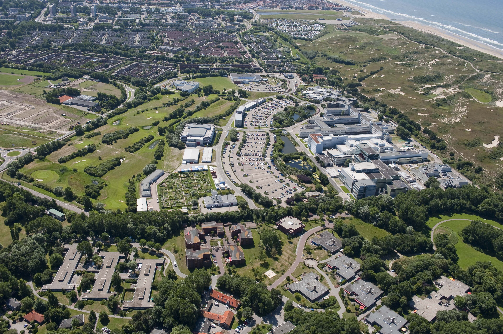
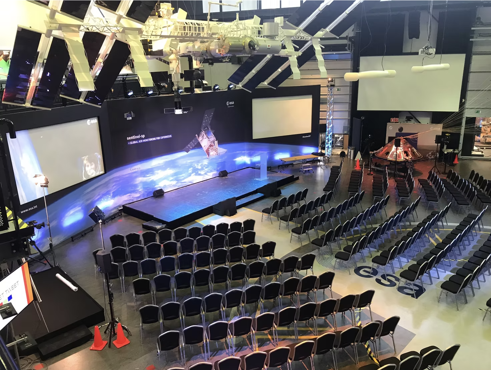

This five-day meeting at ESA/ESTEC, organised by the NewAthena Science Working Group 2 (SWG2), brings together researchers working on galaxies and supermassive black holes in X-rays. The meeting is science-driven: centred on the presentation and discussion of results spanning the full scope of SWG2 science.
The timing is deliberate. Scheduled after the SWG2 Special Issue deadline in the Journal of High Energy Astrophysics, the meeting provides a natural forum for authors to present their recently submitted work. The meeting is open to all SWG2 science, not only to researchers contributing to the Special Issue — anyone working in the field is warmly encouraged to present their work.
NewAthena (planned launch: late 2030s) is ESA's next flagship X-ray observatory. SWG2 — Galaxies and Supermassive Black Holes — gathers researchers working on AGN physics, galaxy evolution, and the cosmic X-ray background.
NewAthena SWG2 encompasses studies of galaxies and their AGN, and their coevolution at all scales: the geometry and origin of X-ray emitting regions, AGN outflows and their energetics, AGN and stellar feedback on host galaxies, and AGN population studies up to high redshift to constrain the seeds and growth of supermassive black holes.
The meeting will start on Monday at noon and end on Friday around noon
The full programme will be posted here after 20 November 2026.
The geometry and origin of X-ray emitting regions: corona–disc coupling, X-ray variability, reflection, reverberation, and high-resolution spectroscopy of AGN winds and outflows.
The energetics, incidence, and effects of AGN outflows; kinetic and radiative AGN feedback and stellar feedback on host galaxies; SMBH–galaxy co-evolution across cosmic time.
AGN population studies up to high redshift to constrain the seeds and growth mechanisms of supermassive black holes, including the cosmic X-ray background.
Deep WFI surveys, the faint AGN population, population statistics, and synergies with other observatories (e.g. Euclid, Rubin, SKA).
Registration is free of charge. We welcome contributed talks on all SWG2 science topics.
Registration and abstract submission opens September 4th 2026.


The meeting will be held at ESA/ESTEC (European Space Research and Technology Centre), Keplerlaan 1, 2201 AZ Noordwijk, The Netherlands. ESTEC is located ~30 km from Amsterdam Schiphol Airport and ~15 km from Leiden.
The sessions will take place in the Erasmus High Bay conference centre at ESTEC. Upon arrival, participants must first report to the ESTEC gatehouse to collect their visitor badge before proceeding to the venue.
Please note that access to ESTEC is controlled. All participants will require an ESTEC visitor badge, for which nationality information is required for the security screening. We apologise for any inconvenience this may cause — all necessary information will be collected at registration. Please ensure your registration is complete by 11 December 2026 at latest. Participants must bring their passport on-site.
We recommend the app 9292 to plan any journey by public transport in the Netherlands. Bus tickets can be paid by card on the bus.
Hotels in Noordwijk and Leiden are the most convenient options, as both are served by direct buses to ESTEC. Staying in The Hague (Den Haag) is also feasible.
Below we list some hotels in the area. Note that we do not have negotiated rates — standard prices apply.
We are committed to minimising the environmental footprint of this meeting and will calculate and report the CO₂-equivalent emissions of all conference activities, including travel, catering, and logistics.
For in-person conferences, travel consistently accounts for the largest share of CO₂ emissions — often over 90% of the total footprint. We strongly participants to travel by train wherever possible. When flying is unavoidable, we encourage carbon offsetting.
Food choices are the second largest contributor to a conference's carbon footprint. The ESTEC canteen offers daily vegetarian and vegan options, and we encourage participants to choose plant-based meals when possible. Animal products (particularly red meat) have a significantly higher carbon and land-use footprint than plant-based alternatives.
For questions about the meeting, abstract submission, or registration, please contact the organisers:
All participants are expected to abide by the SCI/E Code of Conduct for conferences, that can be found here.